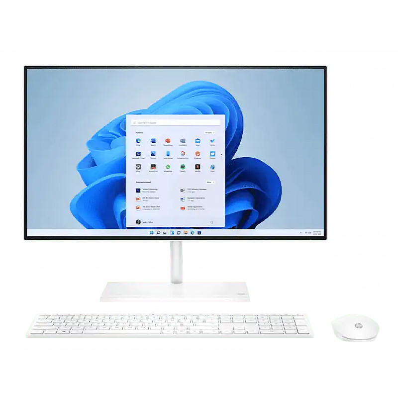
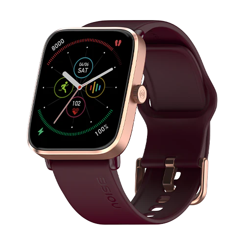
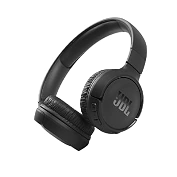

PRODUCT CATALOG
Go to Electronics sectionGo to Book section
Go to headphones section
Electronics Item:-
1.Product Name:-Desktop
Model:-Dell Insipiron 3011
Price:-19999$
About:- This product is made by Dell.Inc.
Specification:-- Processor:- Intel I9 12th Gen
- Core:-4 core & 2.46 GHz
- HDD:-1TB with 512 GB SSD
- Camera:-Full HD camera
- Resoultion:-1920*1080
- Keybord:-Backlit
2.Product Name:-Laptop
Model:-Mac Book Air
Price:-2999$

About:- This product is made by Apple.Inc.
Specification:-- Processor:-Apple M1
- Display size:- 13.30 inch with macOS operating system
- Core:-8 core & 4.46 GHz
- HDD:-1TB with 512 GB SSD
- Camera:-Full HD camera
- Resoultion:-2560*1600
- Keybord:-Backlit
3.Product Name:-Realme
Model:-Realme 6 pro
Price:-199$

About:- This product is made by Realme.
Specification:-- Processor:- snapdragon 788+
- Ram-8GB.
- Rom-128GB.
- Camera:-Rear 108MP.
- Camera:-Front 32MP.
- Resoultion:-Full HD.
4.Product Name:-Smart Watch
Model:-Realme S1 pro
Price:-19$
About:- This product is made by Realme.
- Track your fitness with real-time experience.
- Heart-beat at Real Time.
- Pulse Rate.
- Daily Activity.
- Your Daily running data.
- Your overall Tracking system with advanced Feature
Books section:-
1.Book Name:-1984
Author:-George Orwell

About:-Nineteen Eighty-Four (also published as 1984) is a dystopian social science fiction novel and cautionary tale by English writer George Orwell. It was published on 8 June 1949 by Secker & Warburg as Orwell's ninth and final book completed in his lifetime. Thematically, it centres on the consequences of totalitarianism, mass surveillance and repressive regimentation of people and behaviours within society.[2][3] Orwell, a democratic socialist, modelled the authoritarian state in the novel on Stalinist Russia and Nazi Germany.[2][3][4] More broadly, the novel examines the role of truth and facts within societies and the ways in which they can be manipulated.
3.Book Name:-Lord of the Rings.
Author:-J.R.R. Tolkien....

About:-The Lord of the Rings is an epic[1] high-fantasy novel[a] by English author and scholar J. R. R. Tolkien. Set in Middle-earth, the story began as a sequel to Tolkien's 1937 children's book The Hobbit, but eventually developed into a much larger work. Written in stages between 1937 and 1949, The Lord of the Rings is one of the best-selling books ever written, with over 150 million copies sold
3.Book Name:-Harry Potter and the Sorcerer's Stone.
Author:- J.K. Rowling...

About:-Harry Potter and the Philosopher's Stone is a fantasy novel written by British author J. K. Rowling. The first novel in the Harry Potter series and Rowling's debut novel, it follows Harry Potter, a young wizard who discovers his magical heritage on his eleventh birthday, when he receives a letter of acceptance to Hogwarts School of Witchcraft and Wizardry. Harry makes close friends and a few enemies during his first year at the school and with the help of his friends, Ron Weasley and Hermione Granger, he faces an attempted comeback by the dark wizard Lord Voldemort, who killed Harry's parents, but failed to kill Harry when he was just 15 months old.
Headphones:-
1. Product Nmae:-Boat Rockerz 550
Made By:-Boat India
price:-20$
Specification:-
- Headphone Type:- Over-Ear
- Driver Type :- Moving Coil Driver
- Driver Size :- 50 mm
- Impedance:- 32Ω
- Sensitivity (dB) :- 90dB±3DB
- Frequency Response :- 20Hz-20KHz
- Battery Capacity (mAh):- 500 mAh
- Playback Time :-20 hours
- Charging Time :-2.5 hours
- Standby Time :-180 hours
- Bluetooth Version :-V5.0
2. Product Nmae:-Boat Rockerz 450
Made By:-Boat India
price:-25$

About this Product:-
- Playback- It provides a massive battery backup of upto 15 hours for a superior playback time.
- Drivers- Its 40mm dynamic drivers help pump out immersive HD audio all day long. Charging Time 3 hours
- Earcushions- It has been ergonomically designed and structured as an on-ear headphone to provide the best user experience with its comfortable padded earcushions and lightweight design
- Controls- You can control your music without hiccups using the easy access controls, communicate seamlessly using the built-in mic, access voice assistant and always stay in the zone
- >Dual Modes- One can connect to boAt Rockerz 450 via not one but two modes, Bluetooth as well as AUX
Specification:-
- Colour:- Aqua Blue
- Form Factor :-On Ear
- Connectivity Technology:- Wireless
- Maximum Operating Distance:- 10 Meter
- Battery cell composition:-Lithium
- Voltage:- 5 volts
- Playback Time :-15 hours
- Charging Time :- 2 hours
- Compatible Devices:-Mobile, Laptop and Tablet
- Bluetooth Version :-V5.0
3. Product Nmae:-JBL Tune 510BT
Made By:-JBL
price:-15$
About this Product:-
- JBL PURE BASE SOUND: Packed with 32mm Dynamic drivers, the JBL Tune 510BT features the renowned JBL Pure Bass sound, which can be found in the most famous venues all around the world.
- QUICK CHARGING: With its superior USB Type-C charging cable, a quick 5 min recharge of your Tune 510BT provides you with playtime upto 2 Hours while in a span of 2 hours, get your headphones completely charged up.
- DUAL PAIRING: The Multi Point Connectivity (Dual Pairing) on Tune 510BT allows youto effortlessly switch between 2 Bluetooth devices. Its a smooth transition when you have to receive a call on your mobile phone call while you are watching a video on your tab.
- VOICE ASSISTANT INTEGRATION: Siri or Hey Google is just a button away: activate the voice assistant of your device by pushing the multi-function button on the earcup.
Specification:-
- Colour:- Black
- Form Factor :-On Ear
- Connectivity Technology:- Wireless
- Battery cell composition:-Lithium ion
- Voltage:- 5 volts
- Playback Time :-15 hours
- Charging Time :- 2 hours
- Compatible Devices:-Bluetooth Devices
- Bluetooth Version :-V5.0